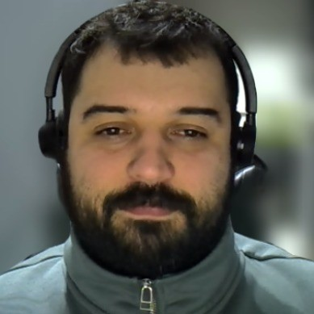

Atuo na fronteira entre engenharia, materiais e computação. Engenheiro civil e de produção de formação, mestre em ciência dos materiais e, atualmente, doutorando em engenharia da computação — trajetória que conecta chão de fábrica, simulação, dados e algoritmos.
Nesta disciplina, conduzo você do conceito de dado, informação e conhecimento até a aplicação de IA na produção, passando pelos sistemas corporativos (ERP, MES, SCM) e pela automação industrial (CLP, SCADA, ISA-95). A proposta é integrar TI e OT em uma visão única da cadeia de informação da fábrica.
O ponto de partida
Na fábrica moderna, dado é matéria-prima. Os sistemas de informação capturam, integram e transformam esse dado em decisão — do pedido do cliente no ERP até o comando que aciona uma máquina no chão de fábrica. Quem entende esse fluxo conecta a estratégia à operação.
Ao longo de 16 videoaulas, vamos do conceito à prática: você sairá daqui capaz de mapear a cadeia de informação de uma planta, integrar TI e OT e identificar onde a IA gera valor real na produção.
Estrutura
| Unidade | Tema | O que você verá |
|---|---|---|
| U1 | Fundamentos de Sistemas de Informação | Dado, informação e conhecimento, componentes de um SI, TPS/MIS/DSS/ERP, banco de dados |
| U2 | Sistemas para a Produção | ERP (SAP/TOTVS), MES, SCM & WMS, CRM e PLM na cadeia de informação |
| U3 | Automação Industrial | Sensores e atuadores, CLP e ladder, SCADA, pirâmide ISA-95 (TI ↔ OT) |
| U4 | IA Aplicada à Produção | ML vs IA simbólica, previsão e manutenção preditiva, visão computacional, IA generativa |
4 unidades · 16 videoaulas · numeração contínua (1 a 16)
Metodologia
Cada conceito vem amarrado a um número, um sistema ou uma decisão de engenharia — nada de teoria solta.
Avaliação
O trabalho integrador é onde tudo se conecta: você aplica as 4 unidades em uma decisão real de negócio.
"Nós confiamos em Deus. Todos os demais devem trazer dados."— W. Edwards Deming, referência mundial em gestão da qualidade
Primeira aula: Dado, informação e conhecimento — o que é tudo isso?
Prof. Afonso Cesar Lelis Brandão